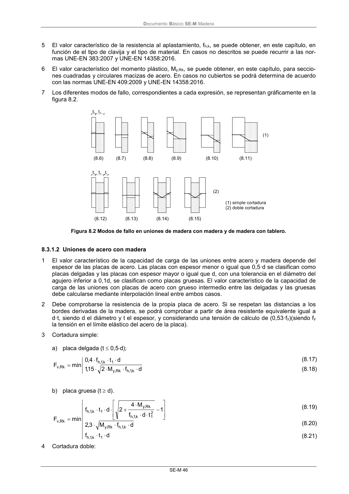
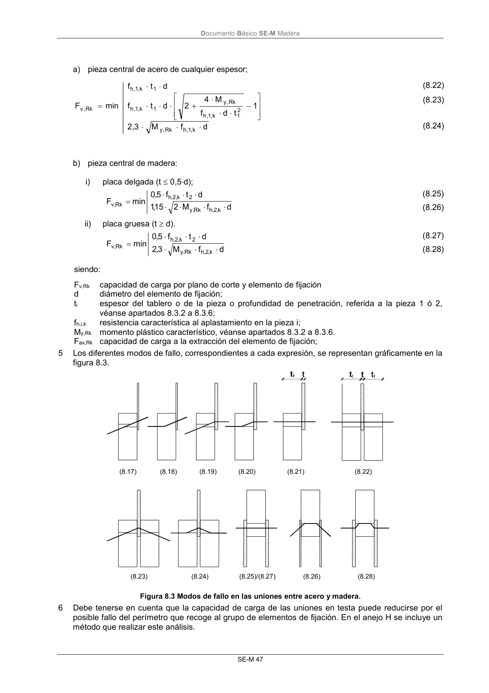

DB-SE-M Madera · edición 2019-12-20 · capa oficial
Documento DB-SE-M-oficial · SHA-256 del PDF 26b5819839ebfda78b0b119c5e76a0a37773b0d763c05688541870075df93718
Copia fiel del PDF fuente · Fuente oficial
Ficha de la disposición en la fuente oficial
Formatos: JSON del segmento · Markdown
8.3.1.2 Uniones de acero con madera 1 El valor característico de la capacidad de carga de las uniones entre acero y madera depende del espesor de las placas de acero. Las placas con espesor menor o igual que 0,5·d se clasifican como placas delgadas y las placas con espesor mayor o igual que d, con una tolerancia en el diámetro del agujero inferior a 0,1d, se clasifican como placas gruesas. El valor característico de la capacidad de carga de las uniones con placas de acero con grueso intermedio entre las delgadas y las gruesas debe calcularse mediante interpolación lineal entre ambos casos. 2 Debe comprobarse la resistencia de la propia placa de acero. Si se respetan las distancias a los bordes derivadas de la madera, se podrá comprobar a partir de área resistente equivalente igual a d·t, siendo d el diámetro y t el espesor, y considerando una tensión de cálculo de (0,53·fy)(siendo fy la tensión en el límite elástico del acero de la placa). 3 Cortadura simple: a) placa delgada (t 0,5d); d f M 2 15 ,1 d t f 4 ,0 min F k,1,h Rk ,y 1 k,1,h Rk ,v (8.17) (8.18) b) placa gruesa (t d). d t f d f M 3,2 1 t d f M 4 2 d t f min F 1 k,1,h k,1,h Rk ,y 2 1 k,1,h Rk ,y 1 k,1,h Rk ,v (8.19) (8.20) (8.21) 4 Cortadura doble: (8.6) (8.7) (8.8) (8.9) (8.10) (8.11) (8.12) (8.13) (8.14) (8.15) DocumentoBásico SE-M Madera SE-M 47 a) pieza central de acero de cualquier espesor; d f M 3 , 2 1 t d f M 4 2 d t f d t f min F k ,1, h Rk , y 2 1 k ,1, h Rk , y 1 k ,1, h 1 k ,1, h Rk , v (8.22) (8.23) (8.24) b) pieza central de madera: i) placa delgada (t 0,5d); d f M 2 15 ,1 d t f 5,0 min F k, 2 ,h Rk ,y 2 k, 2 , h Rk ,v (8.25) (8.26) ii) placa gruesa (t d). d f M 3,2 d t f 5,0 min F k,2 ,h Rk ,y 2 k,2 ,h Rk , v (8.27) (8.28) siendo: Fv,Rk capacidad de carga por plano de corte y elemento de fijación d diámetro del elemento de fijación; ti espesor del tablero o de la pieza o profundidad de penetración, referida a la pieza 1 ó 2, véanse apartados 8.3.2 a 8.3.6; fh,i,k resistencia característica al aplastamiento en la pieza i; My,Rk momento plástico característico, véanse apartados 8.3.2 a 8.3.6. Fax,Rk capacidad de carga a la extracción del elemento de fijación; 5 Los diferentes modos de fallo, correspondientes a cada expresión, se representan gráficamente en la figura 8.3. Figura 8.3 Modos de fallo en las uniones entre acero y madera. 6 Debe tenerse en cuenta que la capacidad de carga de las uniones en testa puede reducirse por el posible fallo del perímetro que recoge al grupo de elementos de fijación. En el anejo H se incluye un método que realizar este análisis. (8.17) (8.18) (8.19) (8.20) (8.21) (8.22) (8.23) (8.24) (8.25)/(8.27) (8.26) (8.28) DocumentoBásico SE-M Madera SE-M 48 7 Al igual que en 8.3.1.1, en las fórmulas de los apartados 3 y 4 se ha prescindido del incremento de carga por rozamiento. No obstante, en el caso de que así se desee, se considerará válido el uso de las ecuaciones de la norma UNE-EN 1995-1-1:2016 que incluyen el efecto del rozamiento, siempre que se consideren las importantes deformaciones que se producen.

